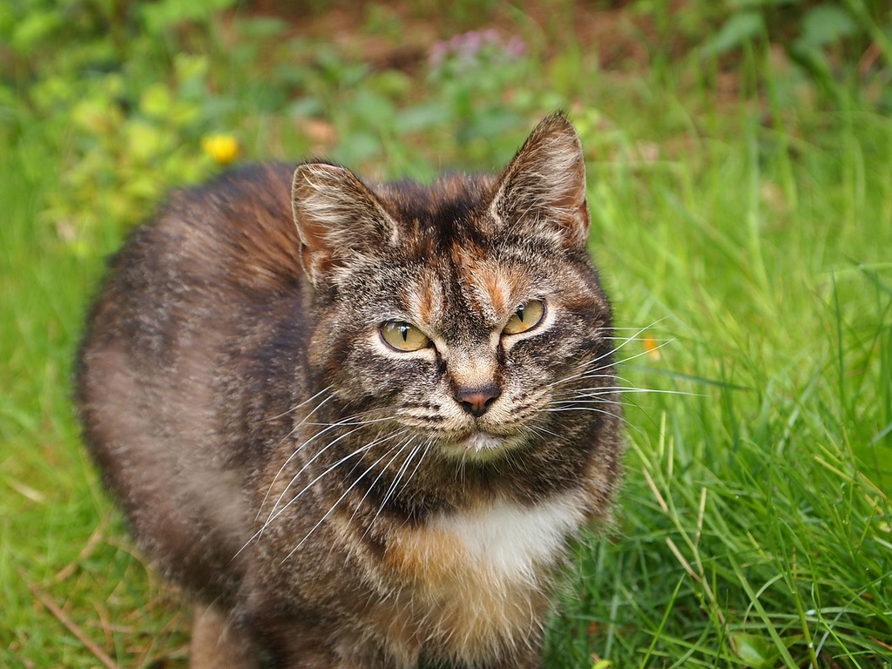

I asked Claude what they like about cats and whether they know some really interesting fun-facts about this animal, and this is their reply:
"I don't have personal preferences the way you do, but if I imagine what would appeal about cats, it's their independence combined with surprising affection — they choose to be close to you rather than needing to be, which makes it feel more genuine when they do curl up next to you. I also like their weird contradictions: fierce hunters who are also afraid of cucumbers, agile athletes who fall off things constantly, tiny bodies with huge personalities. A fun fact: cats can't taste sweetness. They're missing the specific taste receptor gene (Tas1r2) that detects sugar, so all that begging at the dinner table has nothing to do with wanting your dessert — it's probably just about the fat or protein in it, or wanting attention. Another good one: a cat's purr sits in a frequency range (around 25–150 Hz) that's been linked to promoting bone healing and tissue repair. Some researchers think purring might actually be a low-grade self-healing mechanism, not just a sign of contentment — cats even purr when they're injured or stressed, not only when they're happy."
If you'd like to learn more, click on the image bellow:
